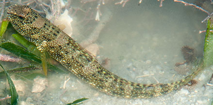

|
|
| fishes text index | photo index |
| Phylum Chordata > Subphylum Vertebrate > fishes > Family Gobiidae |
| Saddled
shrimp-goby Cryptocentrus maudae* Family Gobiidae updated Sep 2020 Where seen? This goby lives with a shrimp and is sometimes seen on some of our shores, on rubbly areas near reefs and among seagrasses. Features: To about 7cm, tiny ones about 1.5cm also seen. Tiny young ones are strikingly black-and-white with a bright white snout and at least 5 white 'saddles' across its back. Older larger ones have a long and narrow body, also with 5 or more 'saddles' which are paler, and dark spots along the sides with tiny pale speckles all over. |
 Juvenile strikingly black-and-white. Labrador, May 05 |
 Adults look very different. Cyrene, Jun 09 |
| Living with a shrimp: This fish is often seen sharing a burrow with a Many-band snapping shrimp. Both tiny young fish and large adults have been seen with snapping shrimps. The burrow is near the mid-water mark. More about the goby and shrimp partnership. |
 Labrador, May 05 |
 Pulau Semakau, Feb 09 Photos shared by Tang Hung Bun. |

*Species are difficult to positively identify without close examination.
On this website, they are grouped by external features for convenience of display.
| Saddled shrimp-gobies on Singapore shores |
On wildsingapore
flickr
|
| Other sightings on Singapore shores |
 Sentosa, Nov 08 |
 |


| Filmed on Labrador,
2008 |
| Acknowledgement With grateful thanks to Zeehan Jaafar for identification of the goby. Links
|